穿梭都市夜景，感受首都高文化魅力
探索8、90年代風靡一時的日本高速公路文化——速度、自由與冒險
那個時期的日本，高速公路不僅是城市間的交通命脈，它還是無數年輕人追求速度與自由的象徵。當時的街頭賽車、改裝車文化以及深夜駛過的車隊，成為了都市傳說中的一部分。那個時代的首都高，是一個開放的舞台，充滿著激情與冒險。從隨著車輛呼嘯而過的音浪到駕駛者們無所畏懼的眼神，每一條高速公路都見證著自由的精神。探索這段歷史，仿佛回到了那個充滿活力的年代，重新感受當時所謂的速度與激情。

 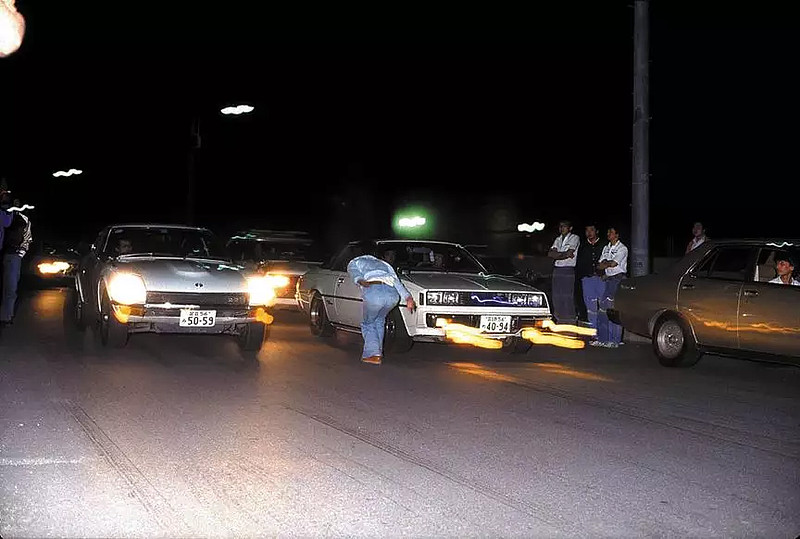
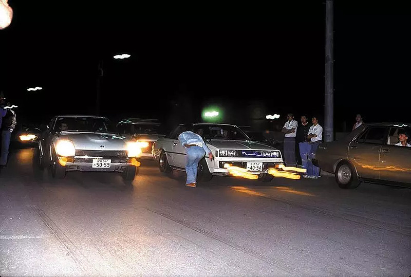
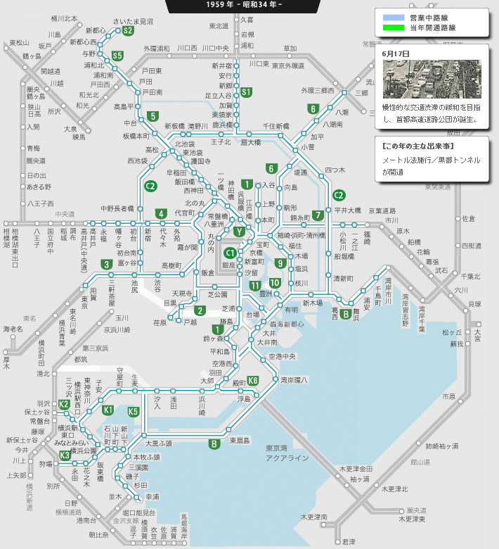
賽車文化
資料來源70年代初期，東京地下飆車組織很分散，警方的管制，使得競速地點來到了東名。從海老明收費站到瀨田·東京收費站的不到30KM的公路上，夜夜笙歌。其中的車手有大部分現在已經成為改裝界的扛把子級人物。
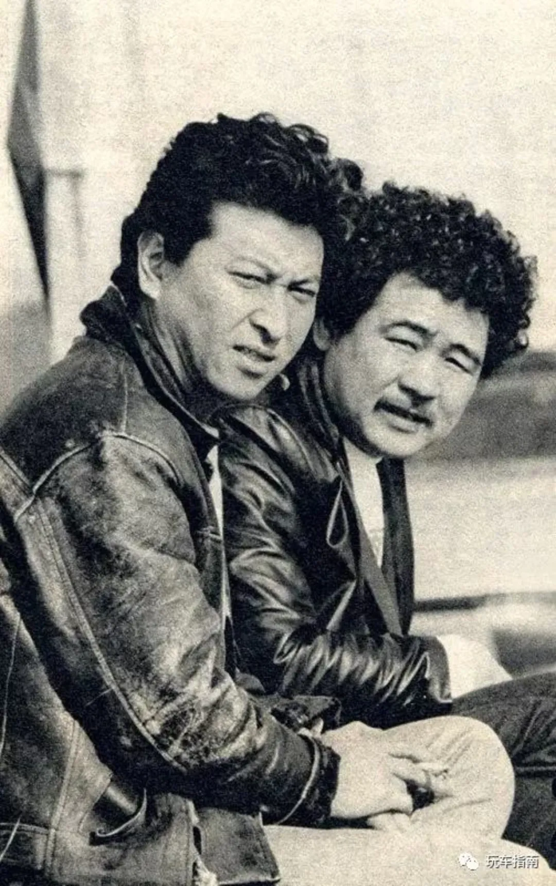
稻田大二郎（左）：被稱為不死之身的男人，Option、D1 GP、TAS創始人，被稱為日本改裝界的「活化石」。 雨宮勇美（右）：雨宮創始人，到如今還是雨宮的主理人。
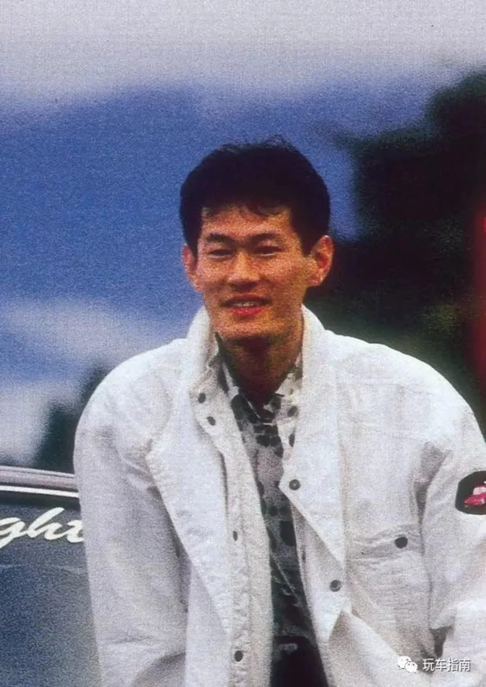
吉田榮一：MPW車主理人，80年代中期Mid Night Club會長，灣岸中黑鳥駕駛原型人物。此生摯愛保時捷。 2018年11月因詐欺罪被判入獄。
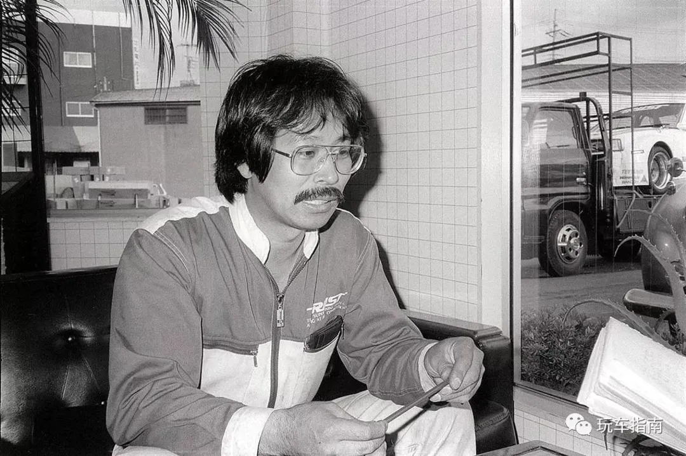
大川光一：曾任TRUST首席工程師，Group C賽車手，第一位使用日本國產街車突破300KM/h的駕駛者。
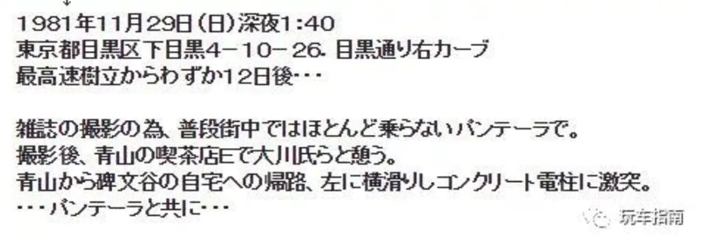
80年代中期，東名高速上漸漸出現了張貼著mid night貼紙的保時捷軍團，而會長就是剛才提及的吉田榮一。
由於政府的大力施壓，東名時代於80年代末期結束，戰場轉至灣岸線。其中有些人止步於東名高速──東永先生，東永先生與大川先生是好友關係，在一次碰面結束後的回程路上，與自己的Pantera永眠於東名高速上。
午夜傳說
Mid Night Club正式成立於1987年，當時灣岸線上的暴走族非常猖獗，為了滅一滅暴走族的威風，吉田榮一建立了Mid Night Club，而加入Mid Night Club很難，這點使得Mid Night Club尤為特殊。大多數車隊會接受任何車手，但Mid Night不同。加入車隊需要的第一個條件就是車子必須夠快（長時間維持250km/h），因此能跑上300km/h的賽車非常普遍。 當新成員加入Mid Night club時，他們都會被視為一年的學徒。為期一年的觀察期結束後，最終只有10％的車手有資格獲得正式會員資格。 但是條件沒有止步於此，非常嚴格的保密製度同時也是俱樂部的守則之一，所有關於姓名，地址，職業，成員如何賺錢以改裝汽車的信息都受到高度保護，並且從未洩露給俱樂部內外的任何人。 最後也是最重要的一條規矩，俱樂部成員不准對其他司機和其他成員構成任何類型的危險，如果你做出了這種行為，那麼你就可以收拾行李走人了
隨著車隊的名氣愈加壯大，有些非組織的車手也開始貼上Mid Night組織的貼紙，如果讓會內成員發現，首先會警告，而警告無效的結果就是——砸車。 在初期，俱樂部有30名成員，但到了90年代中期，Mid Night大約有75名成員。 有趣的是，在當時漂移也很受歡迎，但是Mid Night從來沒有漂過，他們的座右銘是「漂移和越野是為了弱者」。速度是檢驗真理的唯一標準！
週日凌晨3點的戰鬥
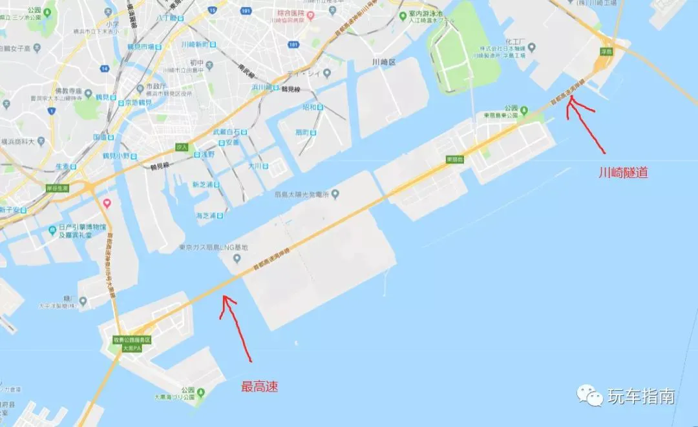 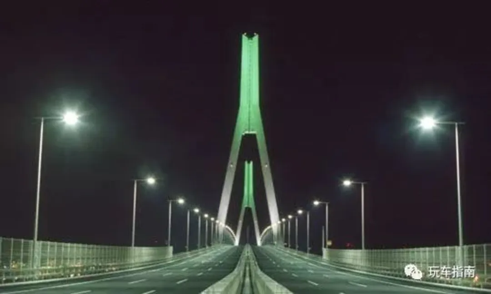灣岸線即使是深夜也會有很多社會車輛行駛，但一周內唯一一個灣岸線通透的瞬間是在周日凌晨的三點，從三點到四點這一小時內，是所有成員衝擊最高時速的「黃金一小時」。而唯一可以衝擊最高時速的地點則是駛過川崎隧道後，到終點大黑PA的7~8KM這個區間（順便說下，平均速度300KM/h的情況下跑完這段路程僅需90s），可以跑出最高速地點則是快進入大黑PA之前的鶴見翼橋上。
組織的破碎
即使有著這麽嚴格的規章制度，但是俗話說得好，常在河邊站哪有不濕鞋，在1999年一個不知名的星期五晚上大約淩晨3點，Bosozoku的成員行駛在灣岸線上，與Mid Night Club 成員發生沖突。但是最終沖突演變為了一場比賽，賽車進入了一片交通擁堵的路段，但是不幸的是Bosozoku騎手失去了控制，以每小時超過250KM/h，撞上了路上正常行駛的車輛，最終導致了巨大的連環撞車事故。事故造成1死8傷，其中6人是與組織無關的社會行駛車輛。 俱樂部初期建立時，就明確表明了如果有人在俱樂部存在期間死亡，無論是他們是賽車手，或者是正常駕車者，不論是間接的還是直接的，俱樂部只要有這種事情發生便會解散。 但是組織在明面解散了車隊，大部分成員還是在繼續奔跑著，到今天為止，據說組織內的人還有6人還在跑，但是地點已經不在灣岸線。
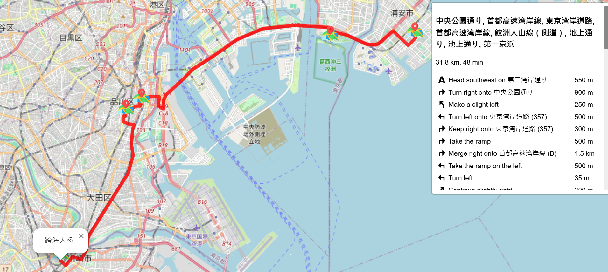
本路線是在灣岸橫濱線剛開通的1994年春天那時所流行的路線，當時由於市川—東海段尚未完全通車，因此完整的懷舊路線應該是「市川PA」→「灣岸線」→「東海JCT」→「橫羽線」→「跨海大橋」。對於不少老一輩的日本競車族來說，是相當能夠引發懷舊之情的路線。
個性化改裝
這類改裝通常不僅限於性能提升，還包括外觀設計、內裝風格和音響系統等方面。常見的個人化改裝包括車身顏色、車身包圍、客製化車輪、運動座椅、豪華內裝以及高品質音響系統。性能方面，車主可能會選擇提升動力系統（如渦輪增壓）、改裝懸吊系統以增強操控、或安裝高性能煞車系統來提升安全性。個人化改裝使車輛不僅反映車主的獨特品味，還能提供更符合個人駕駛風格的性能表現。
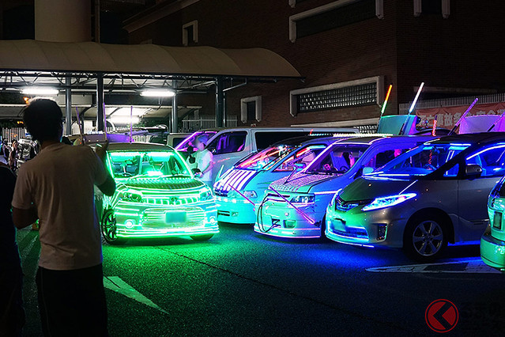首都高賽車
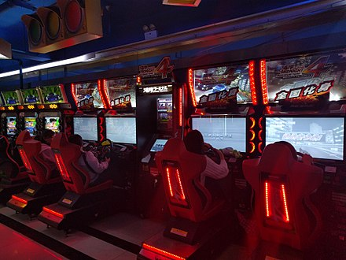
wangan midnight maximum tune
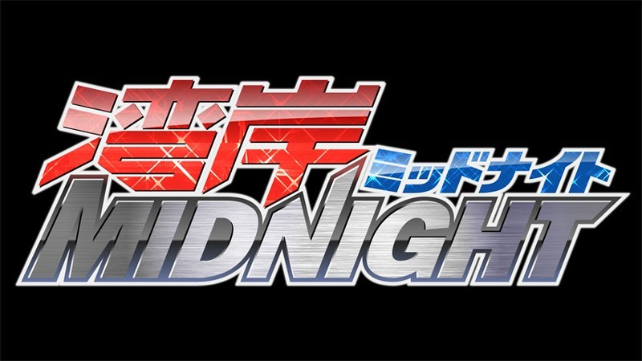
灣岸Midnight
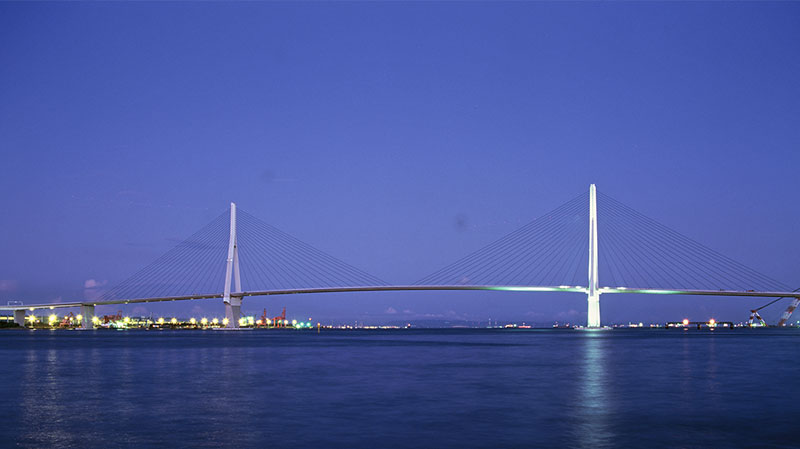
×
鶴見翼橋
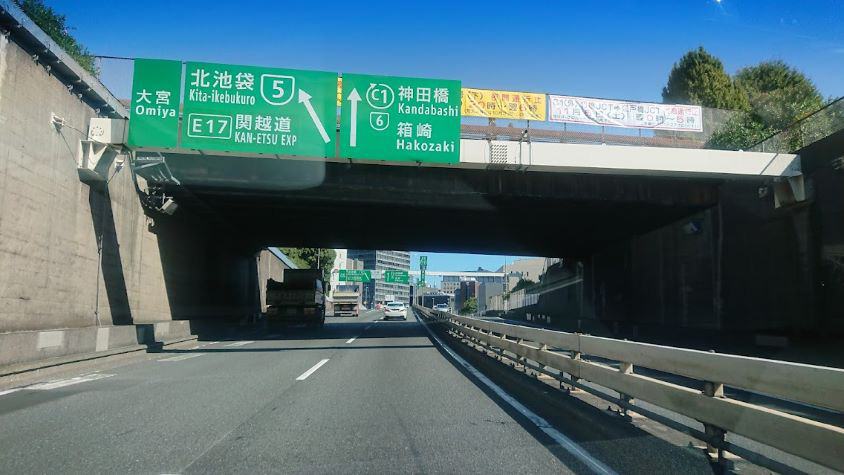
c1環狀線
.jpg) 入口
入口
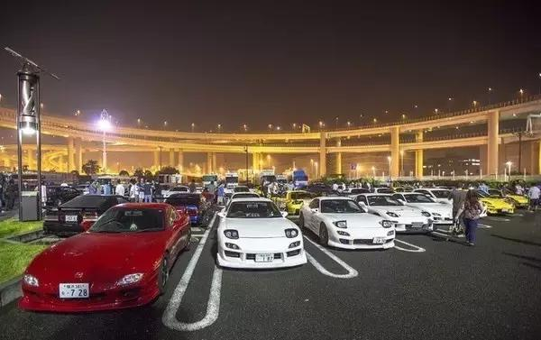
大黑PA
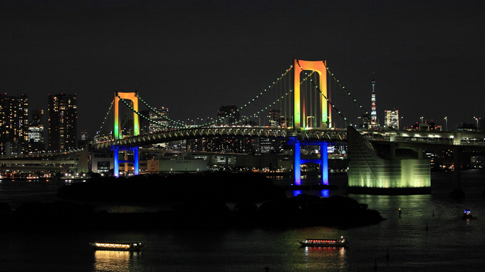
彩虹大橋
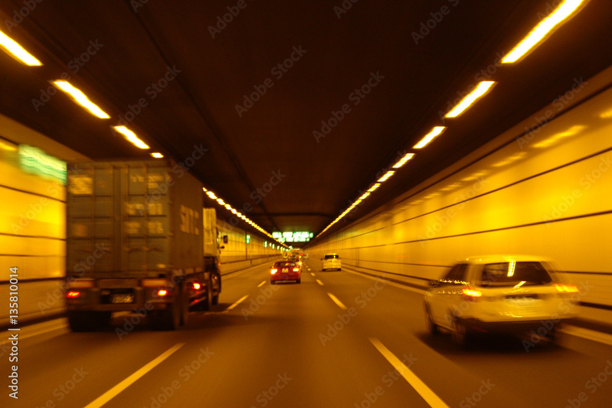
灣岸線
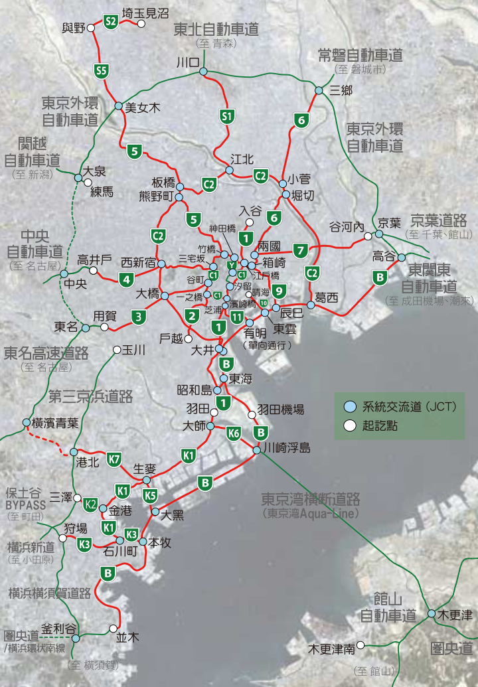
首都高維基百科
首都高速道路株式会社
E-NEXCO DoRaPuRa
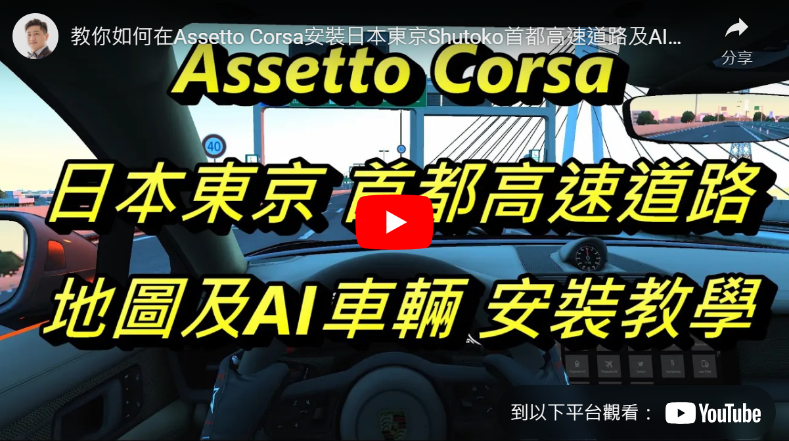
首都高 assetto corsa
景點介紹
路線介紹
首都高故事
首都高近代工程
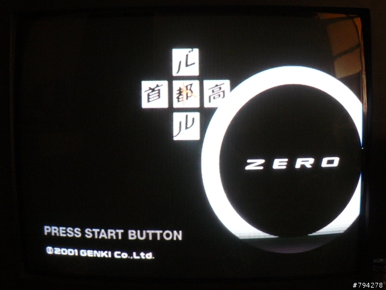
首都高zero遊戲心得
謝謝 已經買機票了